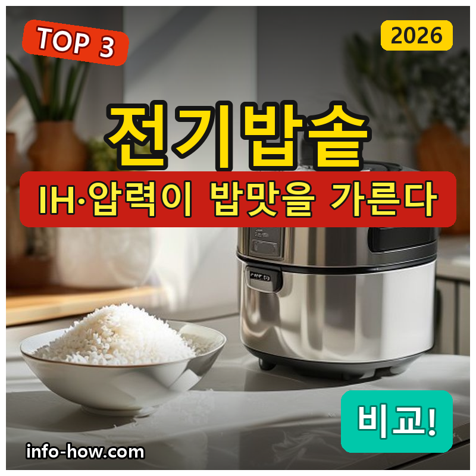
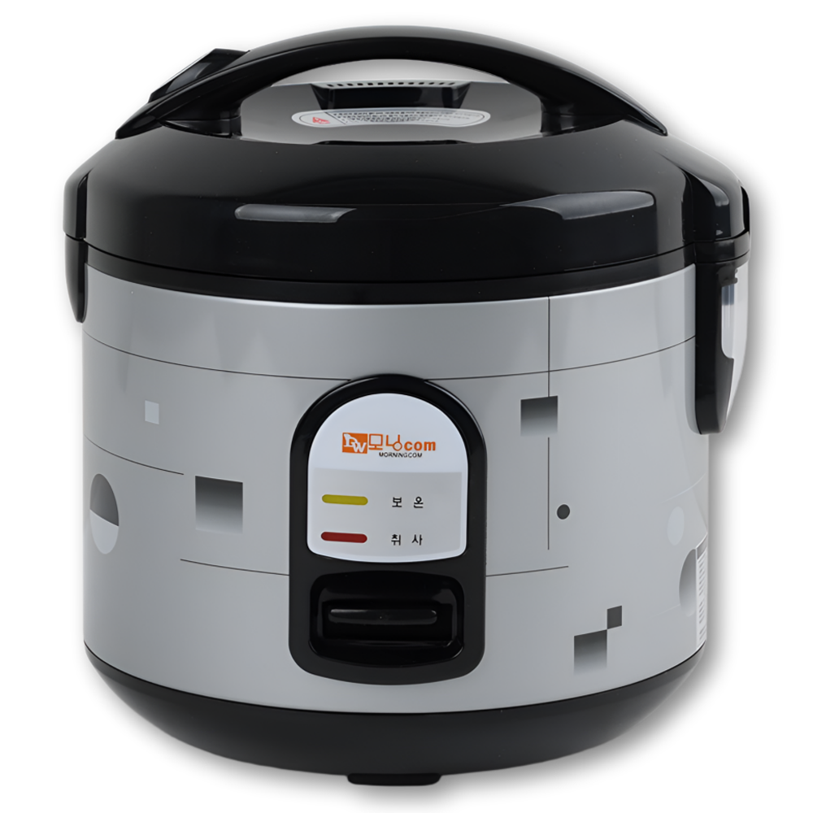
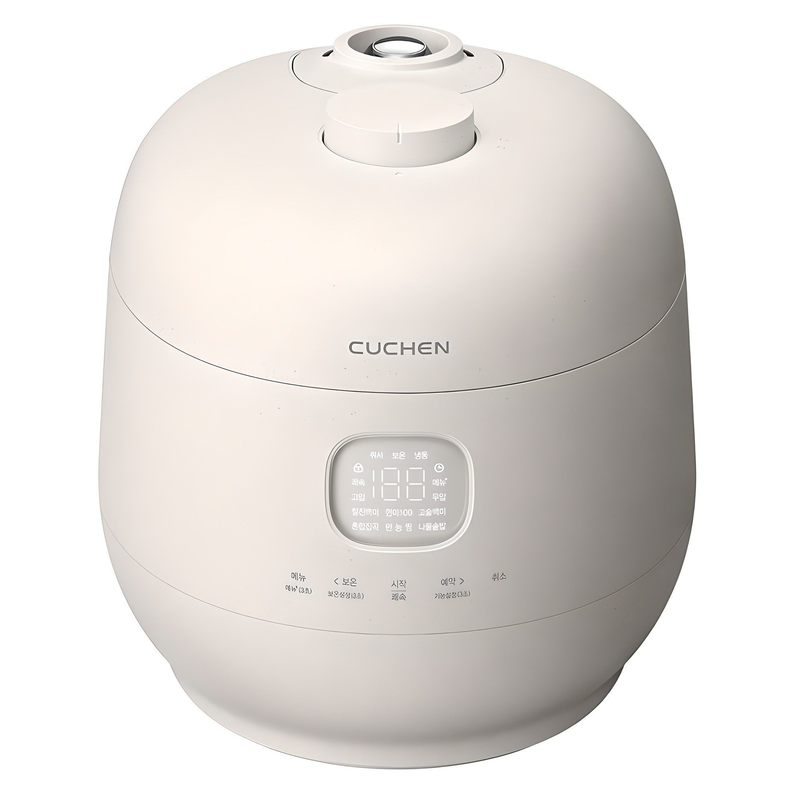
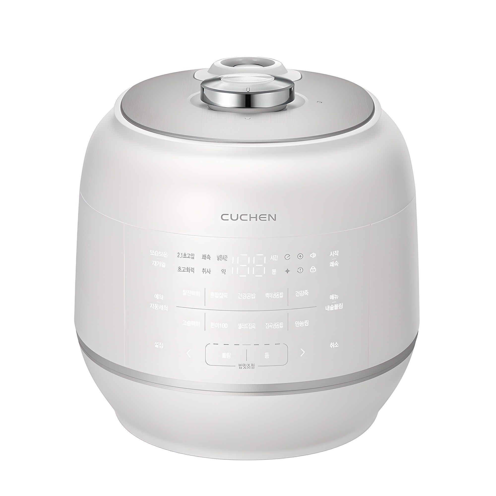

홈 › 제품리뷰 › 주방/조리
전기밥솥, 열판 소형 vs IH압력 밥맛
작성: 생활서식 모음 · 2026-07-12

파트너스 활동의 일환으로 일정액의 수수료를 지급받습니다
🛒 오늘의 쿠팡 특가 보러가기 →
전기밥솥, 밥맛 차이가 정말 날까요?
핵심은 "가열방식(열판 vs IH·압력)과 인용" 3대 를
"1~2인 최소" "가족 밥맛" "대가족·위생"가구별 정답 까지 담았으니
📋 목차
전기밥솥, 열판 소형 vs IH압력 밥맛 — 결론 먼저 스펙 비교표: 한눈에 보기 전기밥솥 고를 때 봐야 할 4가지 1인가구냐 대가족이냐, 뭘 사야 할까? 자주 묻는 질문 (FAQ) 결론: 한 줄 요약
전기밥솥, 열판 소형 vs IH압력 밥맛 — 결론 먼저
전기밥솥은 "가열방식과 인용" 이 8할이에요.쿠첸 IH압력 6인용 이 무난합니다. IH·압력이라 밥이 차지고 보온해도 덜 마르거든요. 1~2인이면 3만원대 소형 열판으로 충분하고, 대가족·위생 중시면 스테인리스 대용량입니다.
1 1~2인·자취 (가성비 초이스)
가성비

3만원대 소형 열판
1. 대웅 모닝컴 전기밥솥 4인용
3만원대 취사·보온 기본 1~2인·자취에 딱 맞는 4인용 조작 간단, 부담 없는 시작
밥맛 최고급은 아니지만
추천 대상
1~2인 가구·자취생 밥솥에 큰돈 쓰기 부담스러운 분 취사·보온만 되면 되는 분 장점
3만원대로 취사·보온 기능을 부담 없이 마련 4인용이라 1~2인 가구에 크기가 적당(자리 안 차지) 조작이 단순해 누구나 쓰기 쉬움 단점
열판 방식이라 IH·압력 대비 밥맛·보온 지속력은 아쉬움 밥맛·보온을 제대로 원하면 2번 IH압력, 대가족·위생이면 3번 스테인리스입니다. "1~2인 기본 밥"이면 이 가성비가 부담 없어요.
한줄 리뷰
"자취라 밥솥은 최소한만"이면 딱입니다. 취사·보온 되고 크기도 적당해요. 다만 밥이 차지고 보온해도 덜 마르는 걸 원하면 IH압력(2번)과 체감 차이가 있으니 참고하세요.
주요 스펙
제품: 대웅 모닝컴 취사 보온 전기밥솥 4인용 방식: 열판(일반) 용량: 4인용(1~2인 가구 적합) 배송: 로켓배송 가격: 약 29,900원 (변동 가능) ※ 실제 스펙·가격과 차이가 있을 수 있습니다
2 가족·밥맛 (베스트 초이스)
베스트

IH압력 6인용
2. 쿠첸 브레인 IH압력 전기밥솥 6인용
IH+압력 = 차진 밥맛 보온해도 덜 마름 가족용 6인 표준 용량
밥이 차지고 보온이 오래가는
추천 대상
가족이 매일 밥을 먹는 3~4인 가구 밥맛·보온 지속력을 중시하는 분 열판 밥솥에서 업그레이드하려는 분 장점
IH(유도가열)+압력 방식이라 밥이 고르게 익어 차지고 밥맛이 좋음 압력·IH 조합으로 보온 시에도 밥이 덜 마르고 오래 맛이 유지됨 6인용 표준 용량이라 3~4인 가족이 쓰기 무난 단점
20만원대로 열판 대비 가격이 있고, 압력 패킹 등 관리가 필요 1~2인이면 1번 소형이 자리·가격 면에서 합리적이고, 대가족·위생 스테인리스면 3번입니다. 2번은 "가족 밥맛" 의 표준 구간 — 매일 밥이 중요한 가정에 가장 무난합니다.
한줄 리뷰
"밥맛 때문에 밥솥 바꾼다"는 분들이 정착하는 IH압력 표준입니다. 갓 지은 밥은 물론 보온해도 덜 말라 만족도가 높아요. 1~2인이면 과하고, 대가족이면 3번 대용량을 보세요.
주요 스펙
제품: 쿠첸 브레인 듀얼프레셔 IH압력 전기밥솥 6인용 (CRH-TWS0610W) 방식: IH(유도가열)+압력 용량: 6인용(3~4인 가족) 배송: 로켓배송 가격: 약 236,700원 (변동 가능) ※ 실제 스펙·가격과 차이가 있을 수 있습니다
3 대가족·위생 (프리미엄)
프리미엄

올스테인리스 10인용
3. 쿠첸 121 올스테인리스 압력밥솥 10인용
내솥 코팅 걱정 없는 올스테인리스 10인용 대용량 압력밥솥 밥맛 + 위생
코팅 벗겨짐 걱정 없는 스테인리스
추천 대상
대가족·손님이 잦아 밥을 많이 하는 분 내솥 코팅 벗겨짐이 신경 쓰이는 분 위생을 최우선으로 두는 분 장점
올스테인리스 내솥이라 코팅 벗겨짐 걱정이 없고 위생적 10인용 대용량이라 대가족·손님상에도 밥이 넉넉 전기압력 방식으로 대용량에도 밥맛이 무난 단점
30만원대로 가격이 높고, 크고 무거워 자리를 많이 차지함 1~2인이면 1번, 3~4인 가족 밥맛이면 2번이 합리적입니다. 3번은 대가족·다량 취사·스테인리스 위생 이 필요한 분에게 값어치가 있습니다.
한줄 리뷰
"코팅 벗겨진 내솥이 찜찜하다" "밥을 많이 한다"는 분에게 올스테인리스 대용량이 맞습니다. 위생·용량이 강점이에요. 반대로 1~2인이 쓰면 늘 반만 채우게 되니 크기를 꼭 가늠하세요.
주요 스펙
제품: 쿠첸 121 플러스 올스테인리스 전기압력밥솥 10인용 (CRT-RPS1071BW) 방식: 전기압력 · 올스테인리스 내솥 용량: 10인용(대가족) 배송: 로켓배송 가격: 약 304,060원 (변동 가능) ※ 실제 스펙·가격과 차이가 있을 수 있습니다
스펙 비교표: 한눈에 보기
가격·풍량·무게 중 본인에게 중요한 기준부터 보세요. "최고" 표시는 3제품 중 객관적 1위 값입니다.
← 좌우로 스크롤 →
전기밥솥 고를 때 봐야 할 4가지
가열방식과 인용만 맞춰도 절반은 성공입니다. 이 4가지로 후회를 막으세요.
1) 가열방식 — 열판 vs IH·압력 (밥맛 핵심)
열판(일반): 바닥만 가열, 저렴 → 1~2인 기본 밥IH(유도가열): 내솥 전체 가열, 밥이 고르고 차짐압력: 압력으로 찰기·보온 지속력 향상 → 가족 밥맛2) 인용(용량) — 가구 수에 맞게
1~2인: 3~4인용(작게)이 자리·전기 효율에 유리3~4인 가족: 6인용 표준대가족·손님: 10인용 대용량너무 큰 걸 반만 채워 쓰면 비효율 3) 내솥 — 코팅 vs 스테인리스
코팅 내솥: 밥이 잘 안 붙지만 오래 쓰면 코팅이 벗겨질 수 있음올스테인리스: 코팅 벗겨짐 걱정 없이 위생적, 대신 가격↑코팅 벗겨짐이 신경 쓰이면 스테인리스를 고려 4) 보온·관리 — 매일 쓰는 만큼
IH·압력은 보온해도 밥이 덜 말라 오래 맛이 유지됨 압력밥솥은 패킹·추 등 부품 청소가 주기적으로 필요 자주 쓸수록 청소·관리 편의도 함께 볼 것 1인가구냐 대가족이냐, 뭘 사야 할까?
가구 수와 밥맛 기대치만 정하면 답이 나옵니다.
1~2인·자취: 1번 대웅 4인용 → 3만원대 가성비3~4인 가족 밥맛: 2번 쿠첸 IH압력 6인 → 차진 밥대가족·위생: 3번 쿠첸 올스테인리스 10인 → 대용량·위생자주 묻는 질문 (FAQ)
Q1. 열판 밥솥이랑 IH압력 밥솥, 밥맛 차이가 정말 나나요? 체감되는 차이가 있습니다. 열판은 바닥만 가열해 밥이 고르게 익기 어려운 반면, IH는 내솥 전체를 유도가열해 밥알이 고르게 익어 차집니다. 여기에 압력이 더해지면 찰기와 보온 지속력이 좋아져 보온해도 밥이 덜 마릅니다. 가족이 매일 밥을 먹는다면 IH압력의 밥맛·보온 차이가 값을 하는 편이고, 1~2인이 가끔이면 열판으로도 충분합니다.
Q2. 1인 가구인데 몇 인용을 사야 하나요? 3~4인용 정도가 무난합니다. 1인이라도 3인용 미만은 너무 작아 한 번에 며칠분을 하기 어렵고, 반대로 10인용은 늘 반만 채워 비효율적입니다. 보통 1~2인 가구는 4인용 안팎이 적당해 자리도 덜 차지하고 밥도 적당히 지을 수 있습니다. 냉동밥을 만들어 두는 편이라면 조금 큰 용량도 고려할 수 있습니다.
Q3. 올스테인리스 내솥이 코팅 내솥보다 좋은가요? 위생 면에서 장점이 있습니다. 코팅 내솥은 밥이 잘 안 붙어 편하지만 오래 쓰면 코팅이 벗겨질 수 있어 신경 쓰는 분이 많습니다. 올스테인리스는 코팅이 없어 벗겨질 걱정이 없고 위생적이지만 가격이 높고 밥이 상대적으로 더 붙을 수 있습니다. 코팅 벗겨짐이 찜찜하면 스테인리스, 관리 편의·가격이 우선이면 코팅을 고르세요.
Q4. 압력밥솥은 관리가 번거롭지 않나요? 일반 밥솥보다 부품 관리가 조금 더 필요합니다. 압력을 유지하는 고무 패킹, 증기 배출구, 추 등을 주기적으로 세척해야 밥맛과 안전이 유지됩니다. 다만 요즘 제품은 분리·세척이 쉽게 설계돼 있어 익숙해지면 크게 부담스럽지 않습니다. 밥맛·보온의 이점이 청소 수고보다 크다고 느끼는 가정에서 많이 선택합니다.
Q5. 보온을 오래 해두면 밥이 마르고 노래지지 않나요? 가열방식에 따라 차이가 큽니다. 열판 방식은 장시간 보온 시 밥이 마르거나 색이 변하기 쉽지만, IH·압력 방식은 밥이 고르게 익고 수분 유지가 좋아 같은 시간 보온해도 덜 마르는 편입니다. 그래도 밥은 오래 보온할수록 맛이 떨어지므로, 많이 지었다면 갓 지었을 때 소분해 냉동했다가 데워 먹는 것이 가장 맛있습니다.
결론: 한 줄 요약
1) 대웅 모닝컴 4인용 — 약 29,900원 / 1~2인·자취. 취사·보온 기본, 3만원대 가성비.2) 쿠첸 IH압력 6인용 — 약 236,700원 / 3~4인 가족. IH+압력으로 차진 밥맛·보온.3) 쿠첸 올스테인리스 10인용 — 약 304,060원 / 대가족·위생. 코팅 걱정 없는 스테인리스 대용량.이 포스팅은 쿠팡 파트너스 활동의 일환으로, 이에 따른 일정액의 수수료를 제공받습니다.